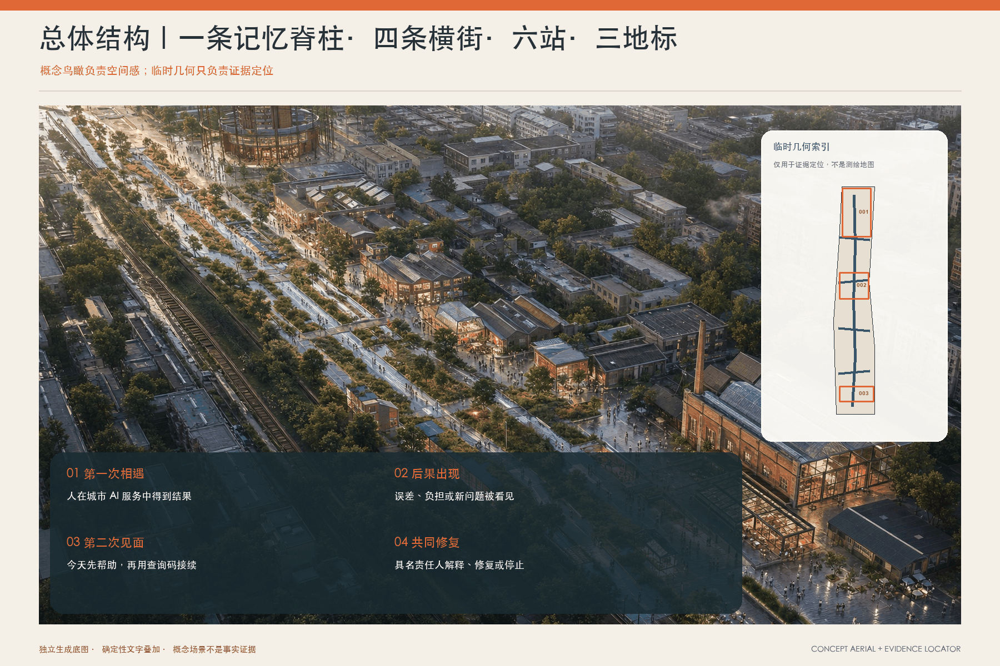
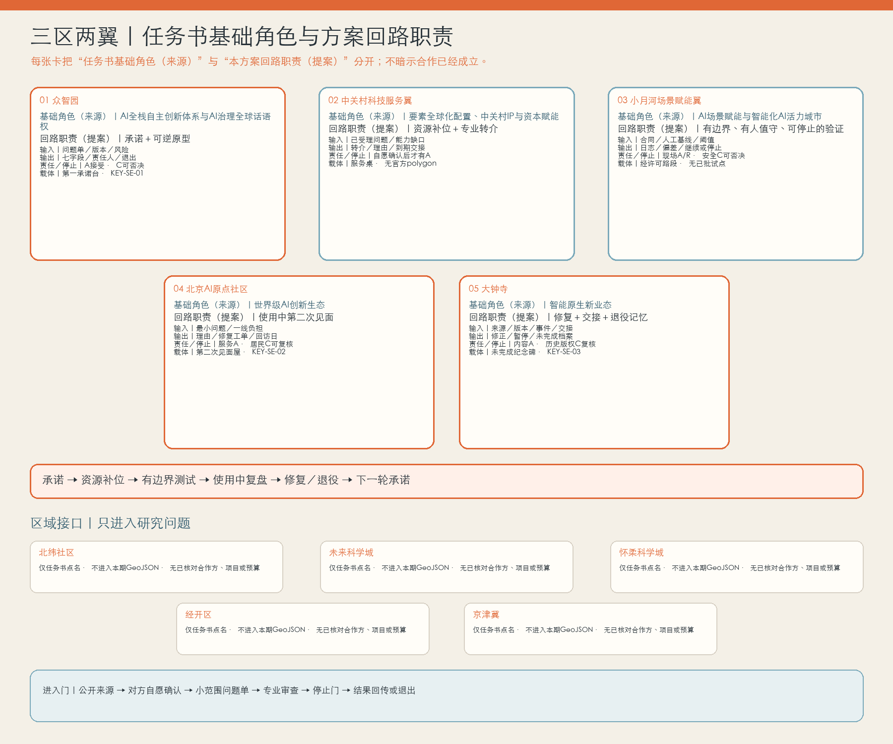
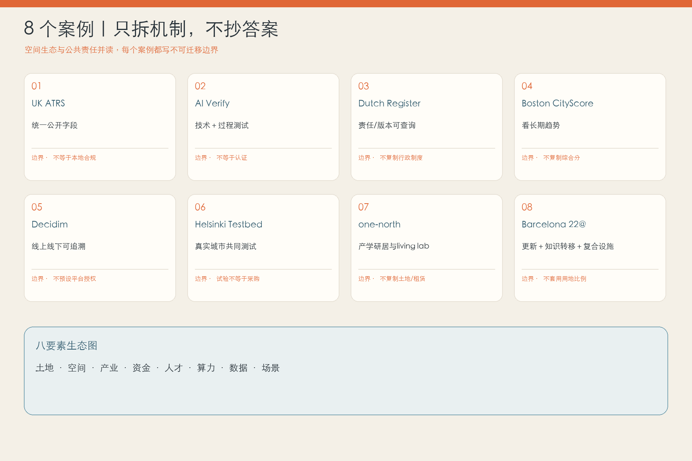
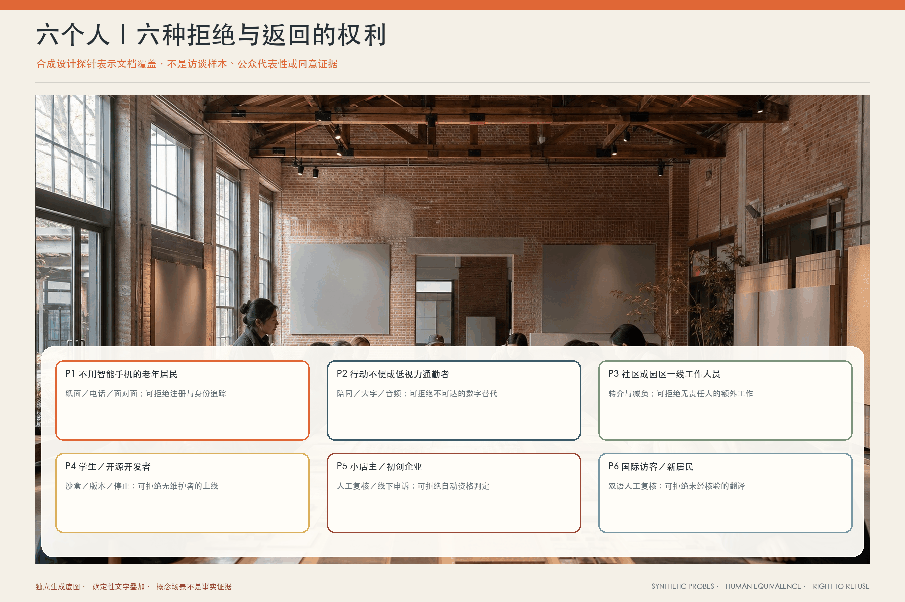
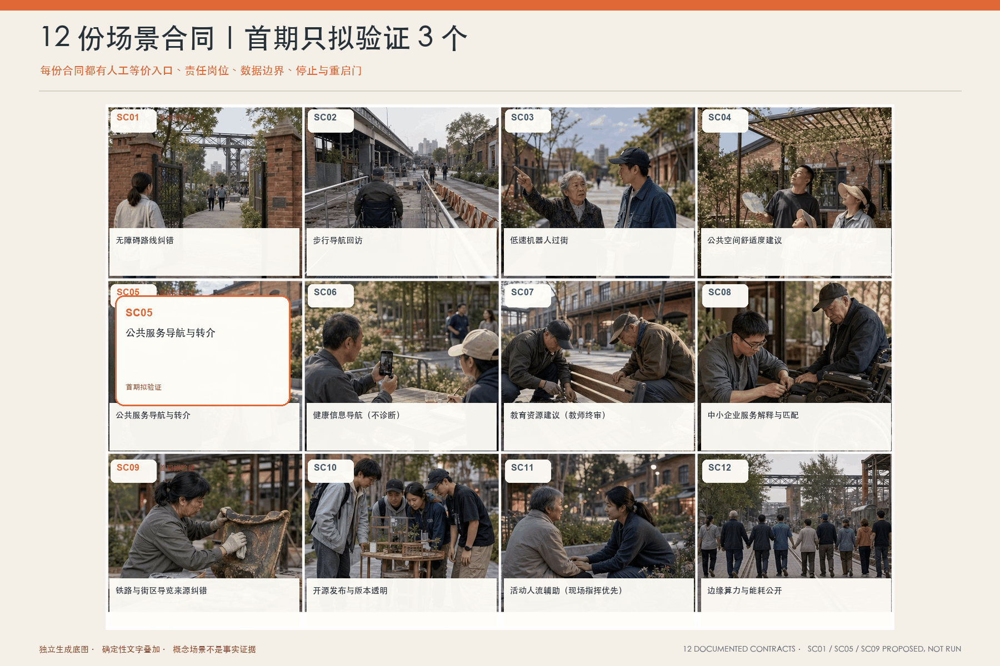
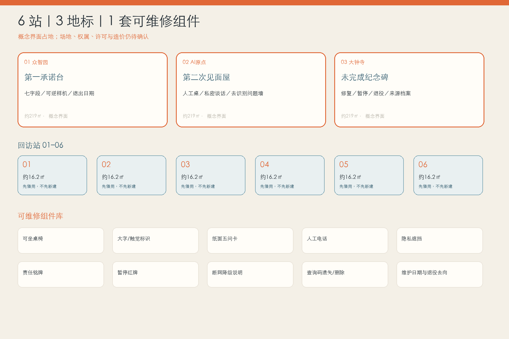
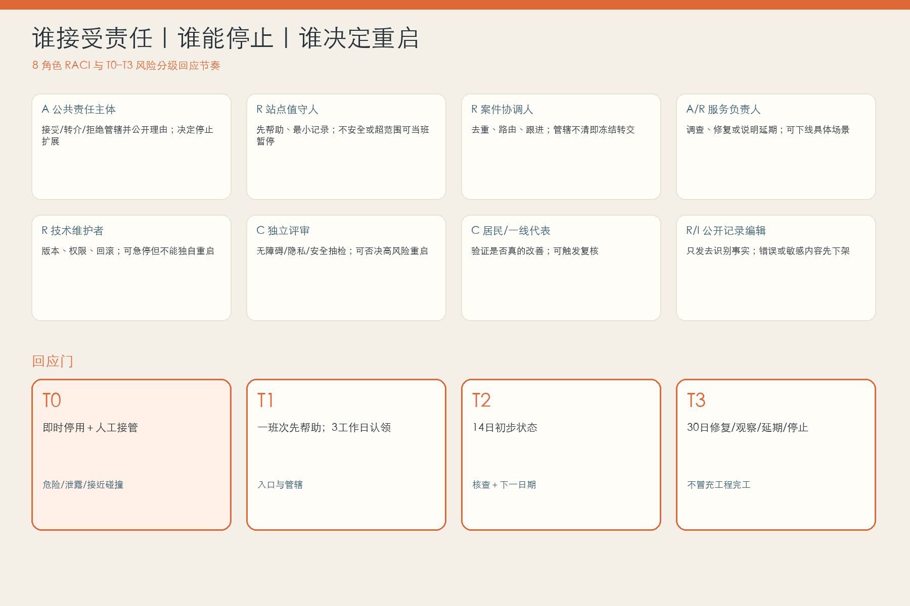

创造 · 众智园
第一承诺台：公共使用前先说明目的、责任和退出。
城市创新不在第一次亮相，而在第二次见面。

第一承诺台：公共使用前先说明目的、责任和退出。
第二次见面屋：居民和一线人员把后果带回来。
未完成纪念碑：修正、暂停和退出进入公共记忆。
这是合成人物情境，不是真实受访记录。一位老人跟着无障碍导航走到施工路口。值守人先画出今天就能走的路线，不要求注册账号。
纸图、座椅和人工回答先解决今天的问题。
由公开岗位认领，姓名和电话默认留空。
实体公告墙与离线页面同步说明。
公布修改、继续观察或停止服务。
3/14/30 是待共创的试点服务目标，不是政府承诺。
以下入口把互动叙事连接到完整专业成果；所有空间数值均由同一组临时 GeoJSON 复算。
五个内部节点逐项写明输入、输出、责任接口、停止门和空间载体。北纬社区、未来科学城、怀柔科学城、经开区与京津冀不进入本期几何和既成合作表述：任务书要求回应，但本包没有已核对的对接主体、项目、预算或同意证据。

空间只有与人工入口、责任接受和重启证据放在同一张图里，才不是一层漂亮外壳。




